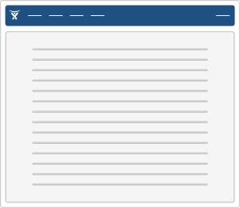
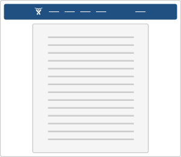
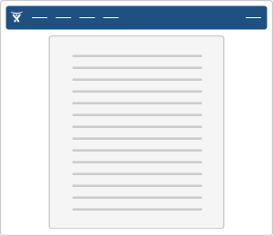
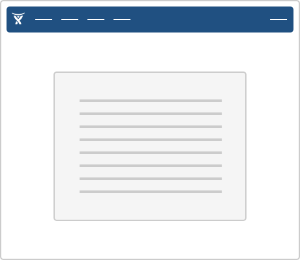

Common markup to produce an Atlassian standard page layout and base design.
This is an "outside-in" type of component aiming to provide a standardised page, intended for use with the full set of application header, navigation, page header, footer, etc. The content area has a preset layout system for common layout variations. There are several overall page layout options (full width, fixed width, etc).
| API status: | general |
|---|---|
| Included in AUI core? | Yes. You do not need to explicitly require the web resource key. |
| Web resource key: | com.atlassian.auiplugin:aui-page-layout
|
| AMD Module key: | N/A |
| Experimental since: | 3.6 |
| General API status: | 5.1 |
The page you are looking at uses AUI Page. The overall layout options are default (full width), fixed width, hybrid (full width header, fixed width content) and focused task page:




This is a markup-based component, however to enable HTML5 in older browsers you will need to include the HTML5 Shim.
To set the page type, apply one of the following classes to the <body> tag:
aui-page-fixed
aui-page-hybrid
aui-page-focused - note you also need to set the sizeaui-page-notification - note you also need to set the sizePage sizes for focused and notification pages are:
aui-page-size-small
aui-page-size-medium
aui-page-size-large
aui-page-size-xlarge (default)Deprecated focused size classes are:
aui-page-focused-small
aui-page-focused-medium
aui-page-focused-large
aui-page-focused-xlarge (default)To construct a full document with soy, you will need to call document and page; then usually fill in other templates such as header, page panel etc or use literal content:
To set the page layout in Soy, use the pageType param:
If you need a small focused page, you can set the size with pageSize. focusedPageSize as been deprecated: